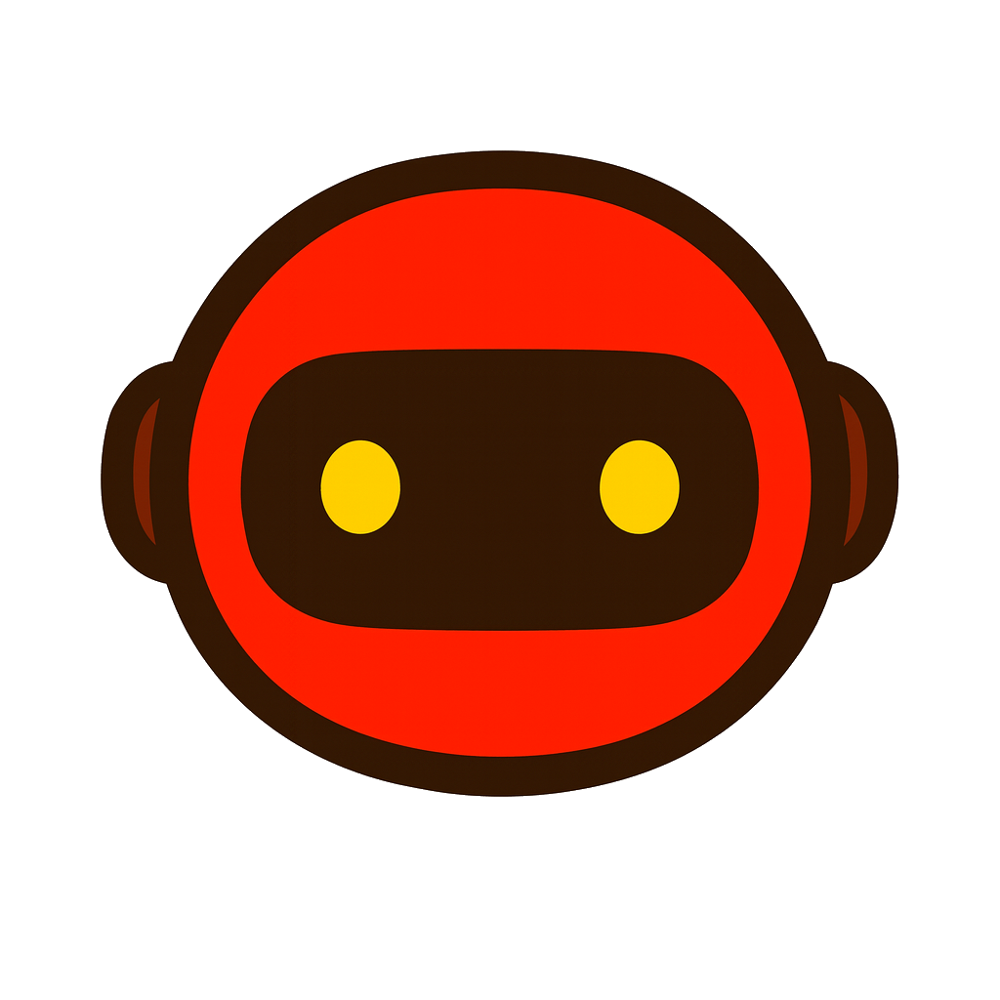
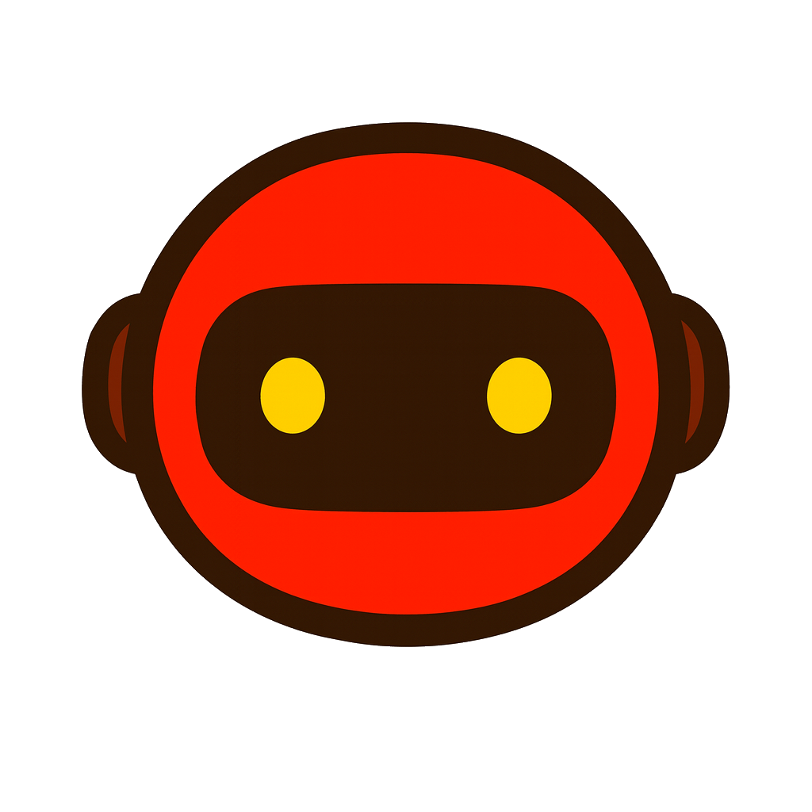

The AI-Born Web3 Ecosystem — Built for Utility, Driven by Community.
(AI-designed, User-owned — AI-Born)
TUMO — Time Utility Machine Organizer:
An AI-Web3 ecosystem designed to save time and create real utility value.

🌐 Welcome to TUMO
Website: https://tumoofc.github.io
Token Utility: Click2Earn, Governance, DAO
Vision: To become a time-saving AI companion, not a replacement.